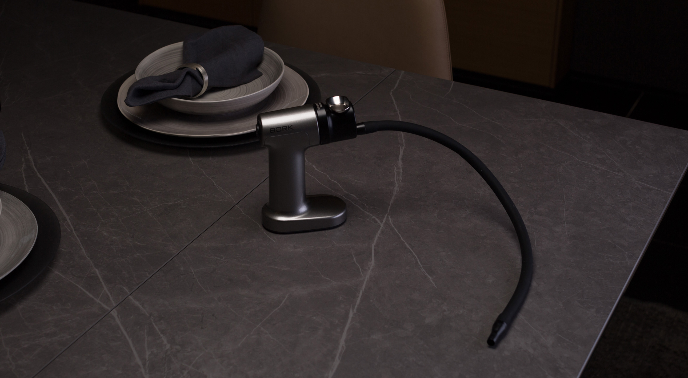
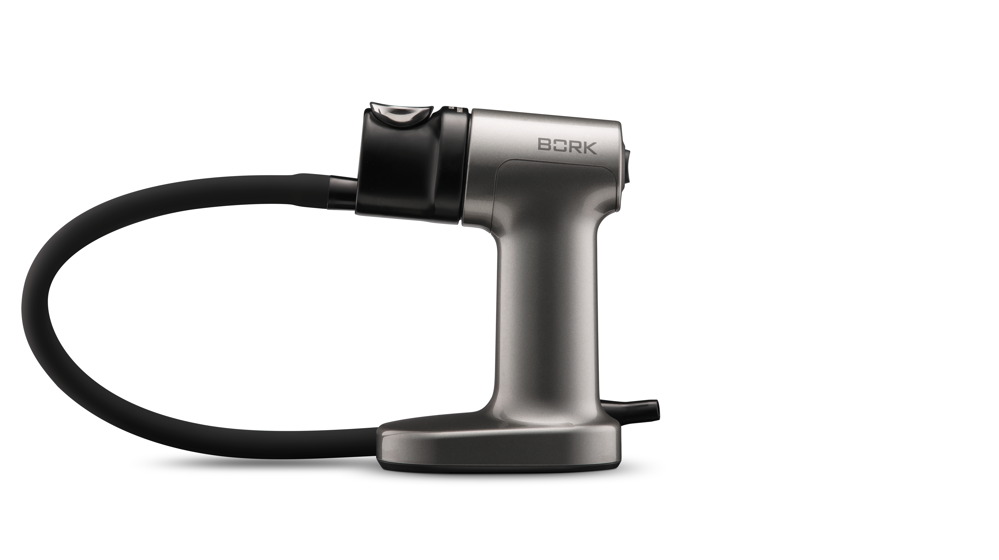
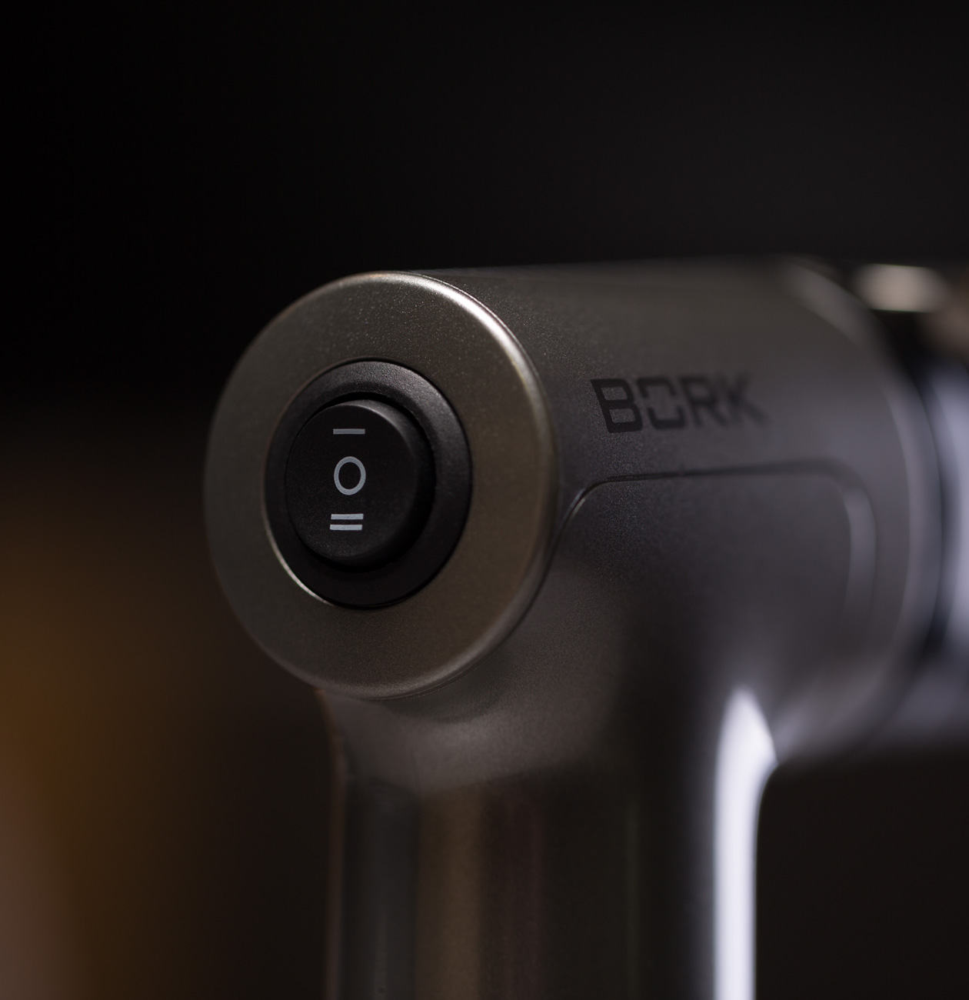
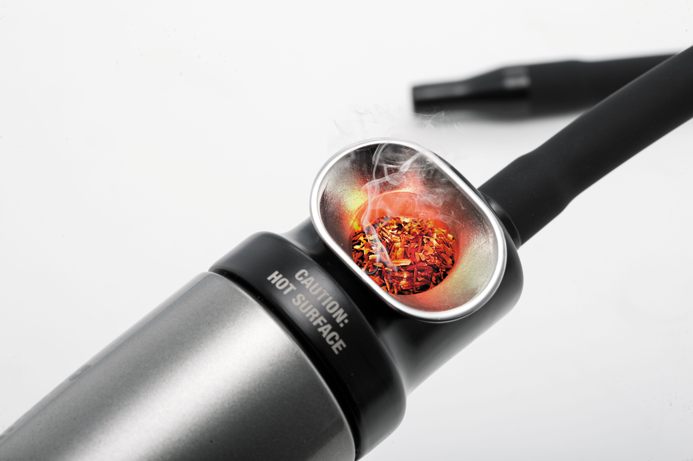
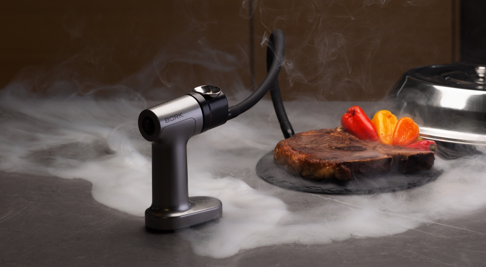
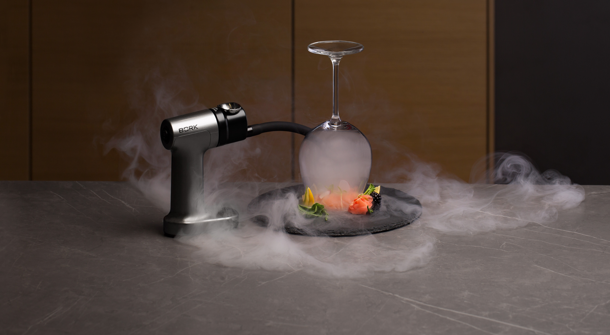
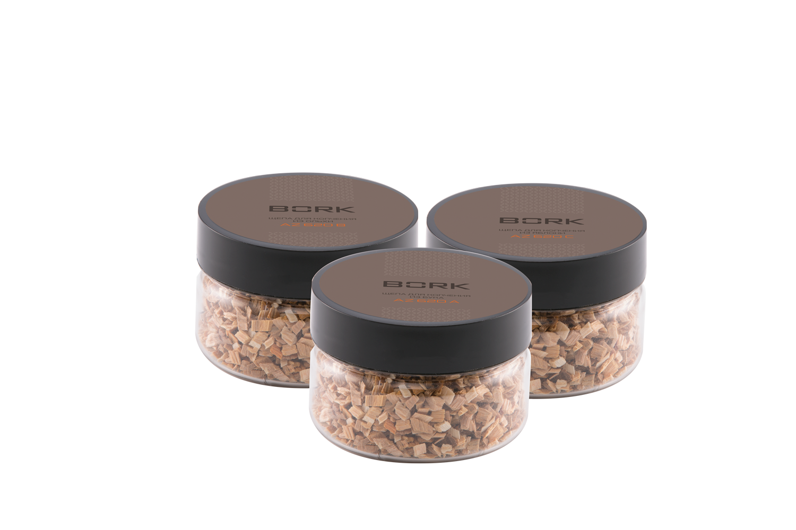
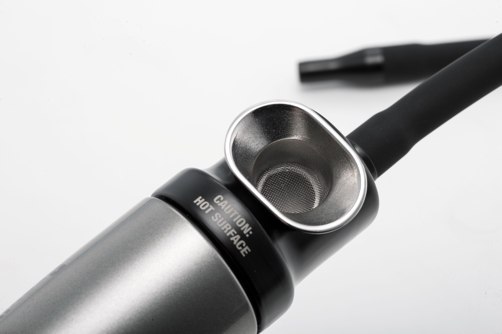
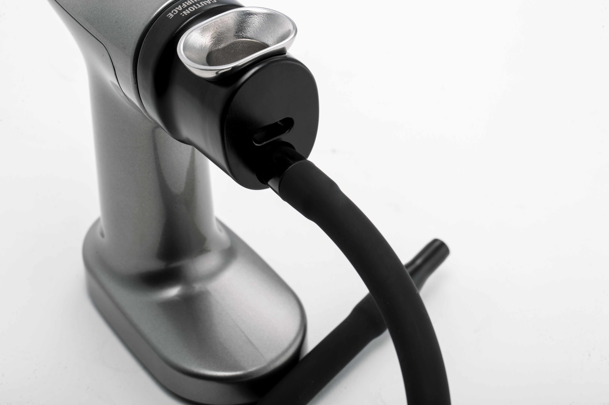
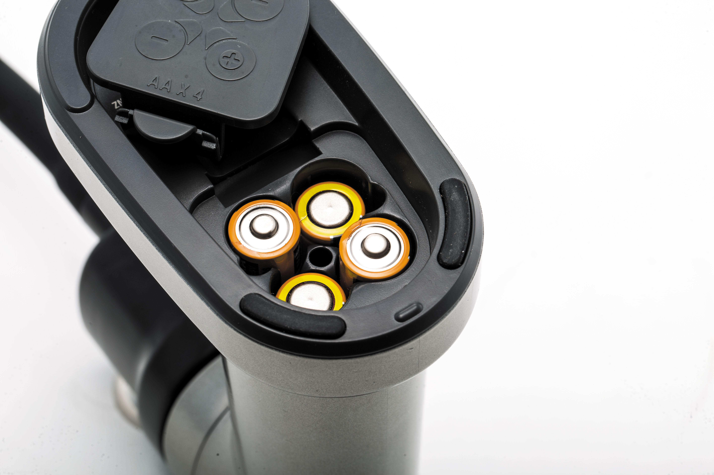

Коптильный пистолет BORK Z620
Коптильный пистолет представляет собой компактный аппарат и идеально подойдет для придания блюдам и свежим продуктам аромата копчения, путем обработки холодным дымом.
Продукты не подвергаются непосредственному воздействию огня или дыма. При этом устройство подходит для копчения любых продуктов: от рыбы и мяса, до десертов и коктейлей. С помощью него можно придать эффект «дымка» даже диетическим блюдам, а салаты, овощи, соусы, масла и фрукты заиграют новыми уникальными кулинарными ощущениями.
Профессиональный результат
BORK Z620 поможет Вам наслаждаться неповторимыми кулинарными шедеврами, не выходя из дома. Уникальная технология копчения и 2 скорости работы позволят регулировать подачу дыма для придания блюдам нежного или интенсивного вкуса и аромата.
Продуманная конструкция
Вместительная камера сгорания позволит легко загружать древесную щепу выбранного Вами сорта. Специальная трубка направляет ароматный дым на нужную зону. При этом компактный размер прибора сделают управление и хранение максимально удобным.
Чтобы начать использовать устройство, необходимо просто заполнить камеру древесной щепой по Вашему выбору и включить пистолет. После чего, щепу нужно поджечь и направить специальный шланг в посуду с блюдом, накрытым пищевой пленкой или крышкой, или в шейкер с напитком.
Способы копчения
Контейнер или пакет
- Положите еду в контейнер, закройте сверху пищевой пленкой или крышкой, вставьте выводящую трубку под пленку/крышку и наполните контейнер дымом. Таким же образом можно коптить еду в плотно закрывающемся пакете.
- Оставьте еду для впитывания дыма на 1-3 минуты и повторите процедуру еще 2-3 раза, если необходим более интенсивный вкус и аромат.
На столе
- Положите еду на тарелку
- Держа широкий стакан для напитков в перевернутом состоянии наполните его дымом из Коптильного пистолета
- Поставьте стакан сверху еды и дайте дыму впитаться
- После подачи блюда гостям, снимите стакан с еды
Настольный блендер
- Приготовьте еду в настольном блендере
- Откройте крышку и впустите внутрь стакана дым. Дайте дыму впитаться в течении 1-3 минут
- Повторите 2-3 раза для более интенсивного вкуса и аромата
Шейкер
- Приготовьте напиток в шейкере
- Наполните шейкер дымом, выньте трубку, закройте крышку и взболтайте ещё раз
Древесная щепа для копчения
Для бытового копчения предусмотрены несколько видов щепы:
Щепа для копчения из ольхи
Ольха идеальна для копчения мяса, птицы, рыбы и колбас. Продукты приобретают островатый пряный вкус.
Щепа для копчения из бука
Бук подходит для копчения любых продуктов. Продукты получают мягкий, чуть вяжущий вкус. Идеален для мяса, птицы и сыров.
Щепа для копчения из яблони
Яблоня придаёт продуктам сладковатый фруктовый привкус. Идеально для десертов, мороженого и коктейлей.
Вы можете экспериментировать, смешивая различные породы и найти свой идеальный вкус.
Сборка

Поместите сетчатый фильтр в диспенсер для древесной щепы сверху и легким нажатием пальца надавите вниз для фиксации внутри.
Вставьте диспенсер в камеру сгорания. Надавите сверху на диспенсер до легкого щелчка для фиксации.
Вставьте широкий конец силиконового шланга в отверстие в передней части камеры сгорания.
Элементы питания
- В приборе используются 4 элемента питания, размера АА (1,5В)
- В приборе нельзя использовать перезаряжаемые аккумуляторы
- Откройте отсек для элементов питания, в нижней части устройства, сдвинут крышку батарейного отсека в направлении задней части прибора и откинув ее назад
- Вставьте элементы питания, соблюдая полярность, указанную на крышке батарейного отсека
- Закройте крышку и сдвиньте вперед для фиксации
Советы
- Для того, чтобы придать запах и вкус копчения продуктам: мясу, рыбе, фруктам или овощам после приготовления, просто поместите продукты в емкость с крышкой и вставьте выводящий шланг под крышку
- Для более эффектной презентации готового блюда, добавьте немного дыма под купольную крышку
- Используйте коптильный пистолет для насыщения деликатных продуктов, таких как сыр и овощи, вкусом и ароматом копчения без изменения их структуры
- Для насыщения продуктов ароматом и вкусом дыма достаточно от одной до трех минут. При копчении в закрытой посуде, просто запустите дым под крышку и оставьте на несколько минут
- Не помещайте выводящий шланг внутрь еды. Оставляйте небольшой зазор
- Постоянный поток дыма из коптильного пистолета не нужен
- Перед повторным использованием устройства, убедитесь, что прибор остыл и очищен от продуктов горения
- Используйте в коптильном пистолете только специально подготовленную щепу. Она специально высушена до необходимой влажности, что снижает количество вредных веществ в дыме